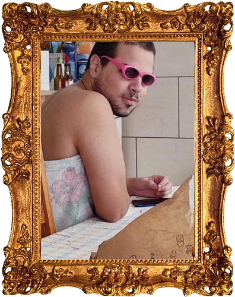
Afonso Gonçalves
FAFU
Mais conhecido como o grande Fafu ou Pescador, ele adora passear com o seu chapeuzinho de pescador, ele é um grade programador em PHP nunca lhe escapa uma virgula. E uma vez ele disse"
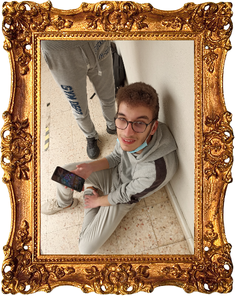
André Conceição
KABU
Mais conhecido por kabu ou kabuchan,é um rapaz simpático e, youtuber nos seus tempos livres tendo com mais visualizações o seu vídeo "Desistir..."
Kabu uma vez disse:"As bolas são a minha vida, isso foi o que ela disse".
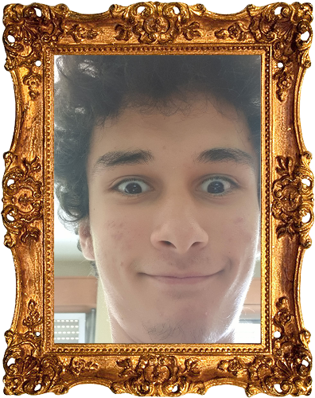
Alexandru Arseni
Alex
Mais conheçido por Alex, ele é um rapaz trabalhador e calmo.
Alex ama Attack on Titan mais do que qualquer coisa menos a Gabi, e odeia fazer web design porque aquilo nunca fica do jeito certo.Uma vez o Alex disse "Vamos apalpar o Iuri..."
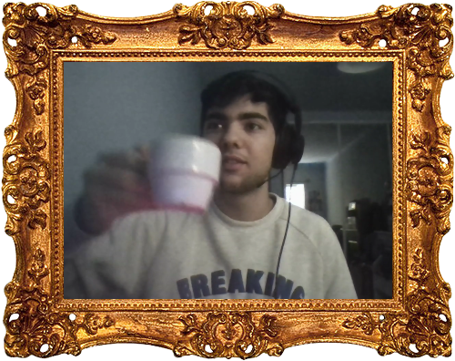
André Algarve
Gordo
Mais conhecido como Gordo ou Gordinho gostoso ou godo,
O André é um homem brincalhão (até demais) e um programador de classe que era
capaz de destruir o proprio computador ou a mesa por conta do codigo que não funciona,
para além disso ele gosta de rir-se da tristeza dos outros. Uma vez o godo disse "Batatinha amanha as 10 na porta do portao"
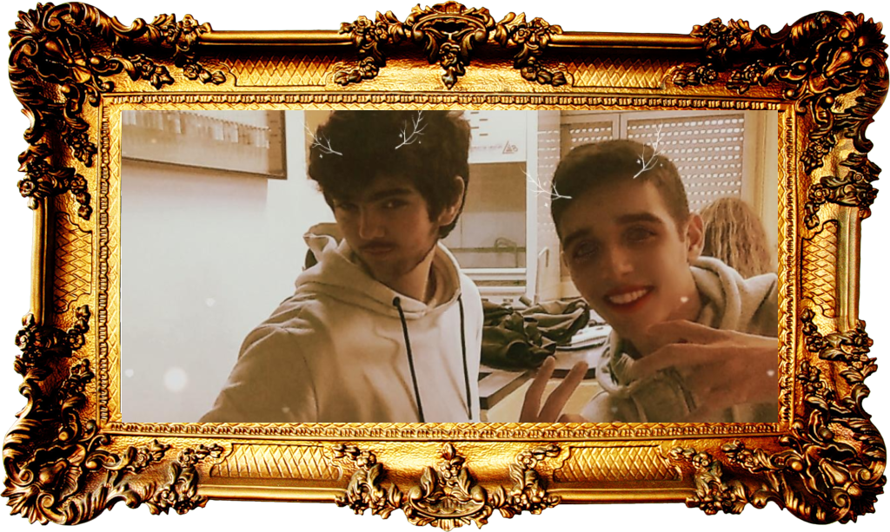
Gordo e Batatinha
Amor entre machos
Esta relação entre o batatinha e o godo, pode ser
descrita como uma relação de amor e odío, eles não conseguem viver juntos mas não
conseguem viver separados durante muito tempo. Uma vez eles disseram um para o outro
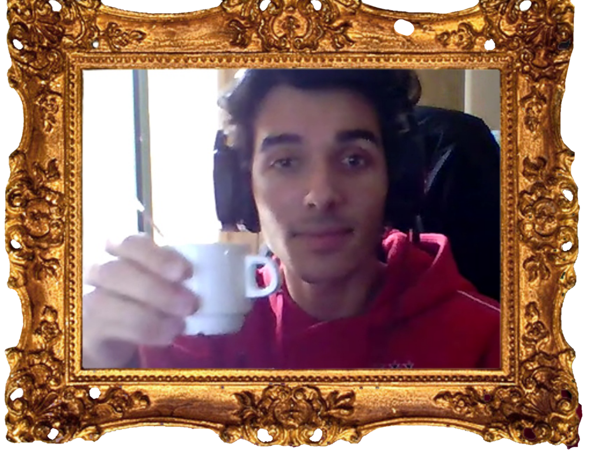
Carlos Delgadinho
Batatinha
Também conhecido como Batatinha, é um homem feliz por fora e
carinhoso por dentro, é vendido, gosta de chocolate milka de morango e adora o professor de redes. Uma vez o Carlos disse:
"Professora eu rejeitei todas as meninas só para vir ter consigo"
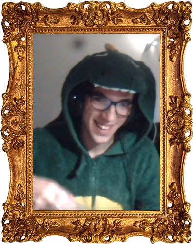
Moises
Pencas
Este bixo do Mato mais conhecido como Pencas ou Penquinhas, ele adora jogos de tabuleiro e coisas misteriosas o passa tempo favorito dele é rugir "RWAWWWWW" e a sua comida favorita é cogumelos e uma vez ele disse:"Eu tenho tempo para dormir avó, muito tu preocupas comigo"

Francisco Alves
Fran
Mais conhecido como Fran ou Chiquinho, Fran é um homem quieto e carente mas quando
fica no seu habitat natural, ele altera completamente, fica mais falador e enfreta toda gente
inclusive com pessoas que nem conhece sem contar que fica mais convencido. Uma vez o Fran disse:
"O kebab do indiano deixou-me com dor de barriga...preciso de ir á casa de banho".

Daniel Cochiço
Danilo
Mais conhecido por Danilo,é um rapaz carismático e direto.
Uma vez o Daniel disse:"Ok "ou" Sim."
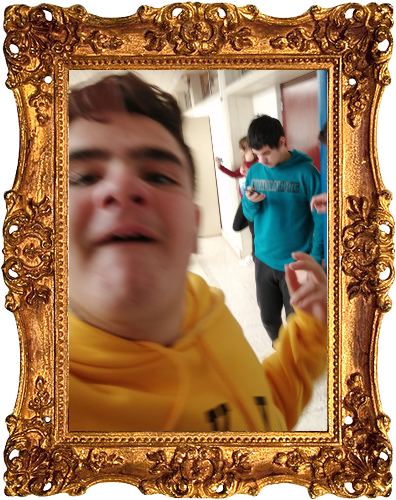
Guilherme
Pink
Este homem estiloso e chunga mais conhecido por pink adora animes e coisas assim parecidas, ele adora ir passear ao infantario e de ver as vistas. E uma vez ele disse:
"A minha namorada parece que tem 13 anos".
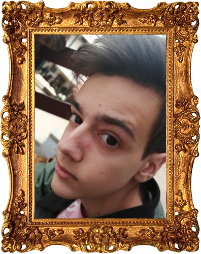
Joel
Big Boss
Também conhecido como Big Boss, é um homem com estilo e grandes ambições. Uma vez
o Joel disse "O Big Boss chegou!".
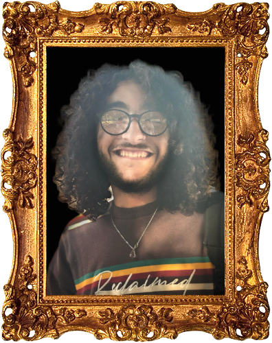
Jose
BateUmCosta
Mais conhecido como "Zé" ou "Bate um costa" ou de acordo com a Professora Paula "José Cabrita",
É um skater e jogador de voleibol na escola manuel teixeira gomes, cuidado o zé não gosta que lhe chamem pela sua alcunha. Uma vez o Zé disse enquanto jogava volei
"Não sabes acertar nas bolas".
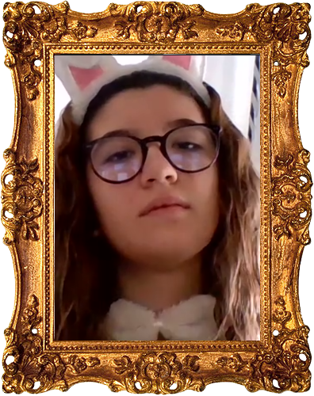
Mariana Gouveia
Babygirl
Mariana mais conhecida por Babygirl, tem uma paixão platônica pelo Pedro Hugo sendo o seu melhor amigo nos seus tempos livres. Se tivesse um restaurante a especialidade era linguado com baratas, é uma pessoa um pouco carente e que muitos alunos do 12ºE já cairam nas suas armadilhas dos abraços. Ela gosta tanto do seu pai, que tem um quadro que diz "Pai gosto mais de ti do que mcdonalds"
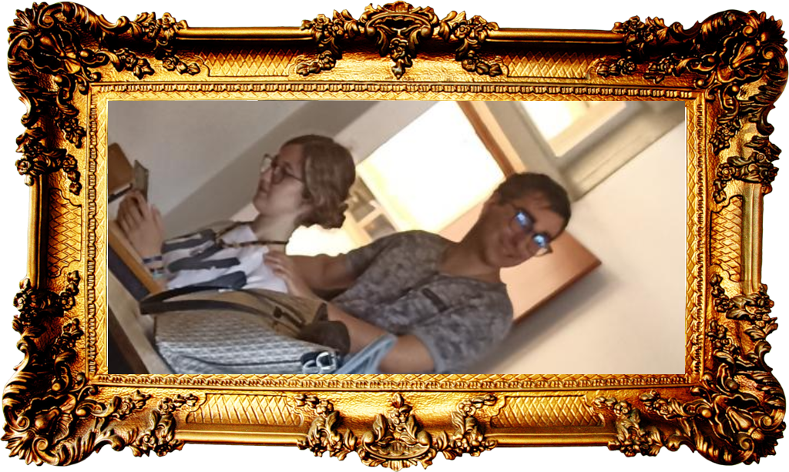
Iuri e Mariana
O Belo e a Monstra
A relação entre o Belo e a Monstra pode ser descrita
como um amor rejeitado, o Belo esforçou-se mas foi em vão pois a monstra só queria amizade.
Uma vez disseram Iuri - "Eu gosto de ti" Mariana - "Eu não".

Iuri Guerreiro
Macho Alfa
Um ser fora do normal que às vezes dá umas de Macho Alfa, como também é conhecido. Consegue sempre acabar os trabalhos, antes mesmo das storas o divulgarem. Também é uma pessoa que sabe sempre TUDO, literalmente TUDO, tudo o que ele gosta de ver e de falar, sem ser a Mariana, é o anime Jujutsu Kaisen, e fez o Carlos e o Moisés saber a historia toda sem eles o verem. Tenham cuidado porque quando se irrita transforma-se e como ele diz "Sou homossexual, logo gosto de mulheres".
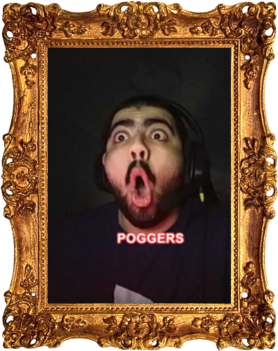
João Algarve
Gordo Gordoroso Seboso
Mais conhecido como gordo, gorduroso, seboso. Gosta de ajudar mas está sempre indignado e revoltado, e chama a todos de burros. Tem de ser o melhor a tudo apesar de nem chegar lá perto, e quando chega à conclusão que não tem razão diz "Pronto tá bem, tu é que sabes" e uma vez disse:
João: "Fogo mãe, pareces a mulher que trabalha no Burger King em los abades."
Mãe: "Então porquê, tinha cara de parva?"
João: "Não, tinha trissomia 21."
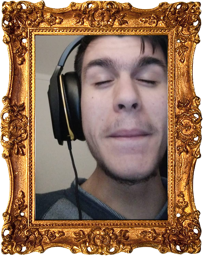
Tiago
Tiaguitos
Tiago Marques - Também conhecido como Tiaguitos, é um streamer de qualidade e muito brincalhão que adora fazer coisas no balnheario masculino durante educação fisica (uma dessas sendo pegar
fogo ás coisas com um desodorizante e um isqueiro). Uma vez ele disse "BORA FAFUUUUUUUUUUU"
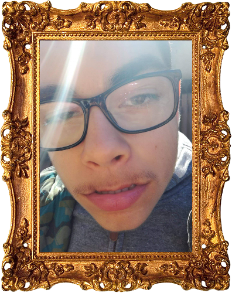
Tavares
Tavazi
Mais conhecido como Tavazi o maior skater do seu bairro, e ele nao mora sozinho! Por vezes ele pode se irritar um bocadinho e fica com uma leve vontade de partir os computadores. E uma vez ele disse: " DORORORO"